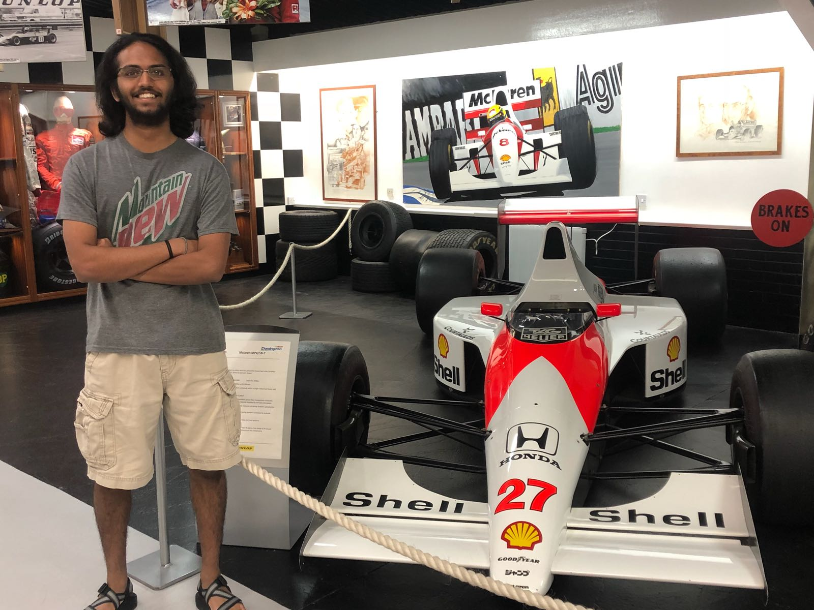

Rubik's Cubes
One of my biggest hobbies is speedcubing. I first learned how to solve a Rubik's Cube in 7th grade and have been speedcubing since 8th grade. I went to my first competition in my senior year of high school. You can check out my official results on my
WCA Profile. My fastest solve on 3x3 is 6.330 seconds and best average of 5 is 9.281 seconds. I can also solve it blindfolded (3BLD) and at some point was ranked 161 in the United States for it with a pretty slow time of 2 minutes and 40.42 seconds.
Car Racing
I have never raced a car. I just watch them race. There's not much to say here except that I watch the cars race on TV in Formula 1. I also loosely follow WEC (World Endurance Championship) and IndyCar. In Formula 1 I heavily support Ferrari. In the summer of 2018, I was in England and was fortunate enough to make a quick stop at the Donnington Collection of Grand Prix Cars. It was my first time ever seeing a Formula 1 Car. Here is me with Ayrton Senna's 1990 World Driver's Championship Winning McLaren MP4/5b:

I also got to see an actual IndyCar race in 2021. The cars went by so fast that it made me think "wow these cars are fast." It is truly mindblowing to see cars just inches from each other blast by at 150 mph.
Astrophotography
I have been into astronomy for a very long time. During the pandemic I got into astrophotography - taking pictures of space. I mostly took pictures from my backyard back home, but I also took some from other places as well. Here's a few:
 Rho Ophiuchi star forming region in constellations Ophiuchus and Scorpio.
Rho Ophiuchi star forming region in constellations Ophiuchus and Scorpio.
 Lagoon and Trifid Nebulae star forming region in constellation Sagittarius. Big red one in the middle is Lagoon Nebula and smaller one above is Trifid Nebula.
Lagoon and Trifid Nebulae star forming region in constellation Sagittarius. Big red one in the middle is Lagoon Nebula and smaller one above is Trifid Nebula.
 A portion of the constellation Orion. Large object to the right is Orion and Running Man nebulae. To the left near one of the bright stars is Flame Nebula (the white one) and Horsehead Nebulae (dim red region).
A portion of the constellation Orion. Large object to the right is Orion and Running Man nebulae. To the left near one of the bright stars is Flame Nebula (the white one) and Horsehead Nebulae (dim red region).
 North America Nebula in constellation Cygnus. Taken on July 4th so it was somewhat of a topical object. It's very pretty though I love the red.
North America Nebula in constellation Cygnus. Taken on July 4th so it was somewhat of a topical object. It's very pretty though I love the red.